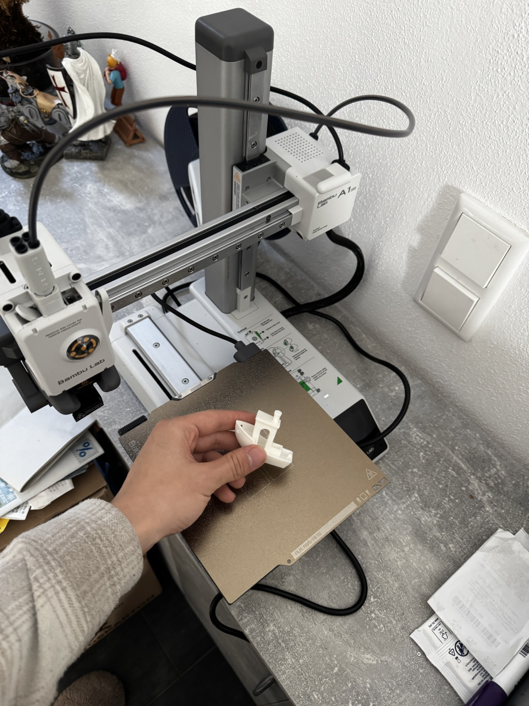
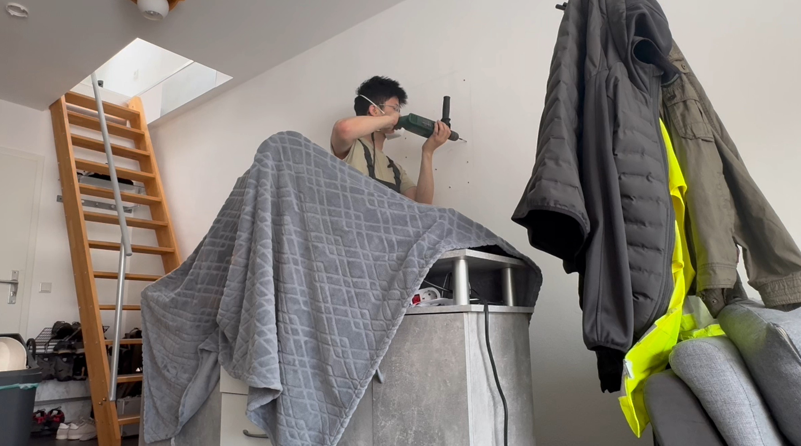
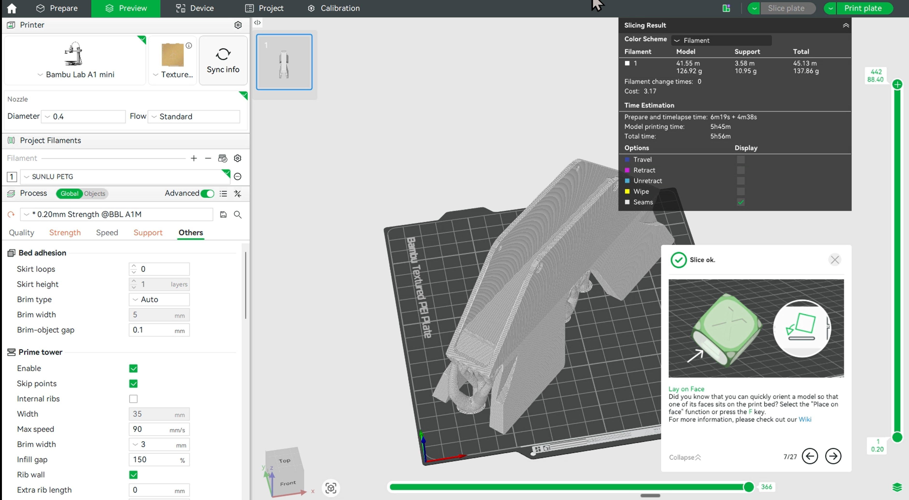
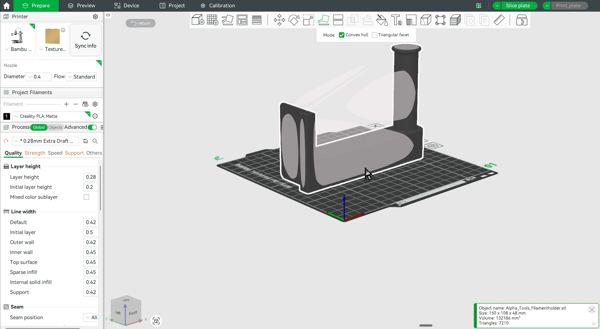
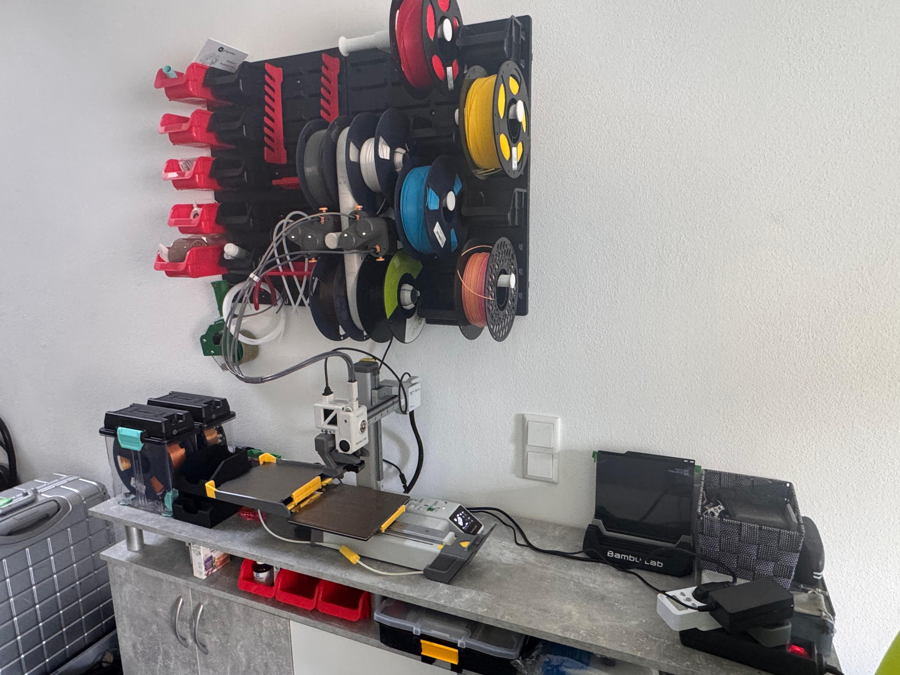
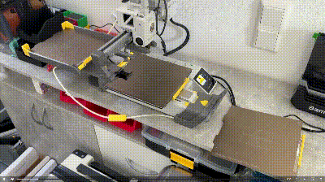

Upgrading my Bambu Lab A1 mini 3D-Printer
Introduction of this project
The Old State
The A1 mini has been purchased for around half a year and could only do some single color painting. I would like to explore its greater value.

Following points were to upgrade:
- The AMS-Lite automatic material system for A1 mini, which enables switching between spools when printing.
- The Swapmod-system from Swap-Systems, which enables the remote switching of printing plates. That way, I could start multiple printing tasks remotely, even I am not at home.
- I would also need some extra space for storing all the small tools and gadgets. For this, my plan is to build a pegboard above my printer, something like the very famous SKÅDIS Pegboard from IKEA.
Building Steps
- Firstly, I tested the AMS-Lite system, which didn't take up much time and effort.

- I realised there was no enough space for the swap mod, if I keep the AMS-Lite on table. Thus it needs to be moved to the wall.
- As the board is to carry a heavy burden, first drill an array of holes in the wall and drive in expansion bolts.

- The board is then installed with some small storage boxes already mounted.

- To move the AMS-Lite onto the wall, I need a firm mounting for it. I used Autodesk Fusion 360 for the CAD-Designing and printed them out with PETG material.

- The rest of the space shall not be wasted. I also designed spool holders for holding some reserve spools.

- And it is beautifully arranged and has made some space for the rest.
- The last step is to install the swap-mod. With the extra space I've won for it, it went pretty quick.

Final Results
Now let's take a moment to enjoy this plate-swapping process:
